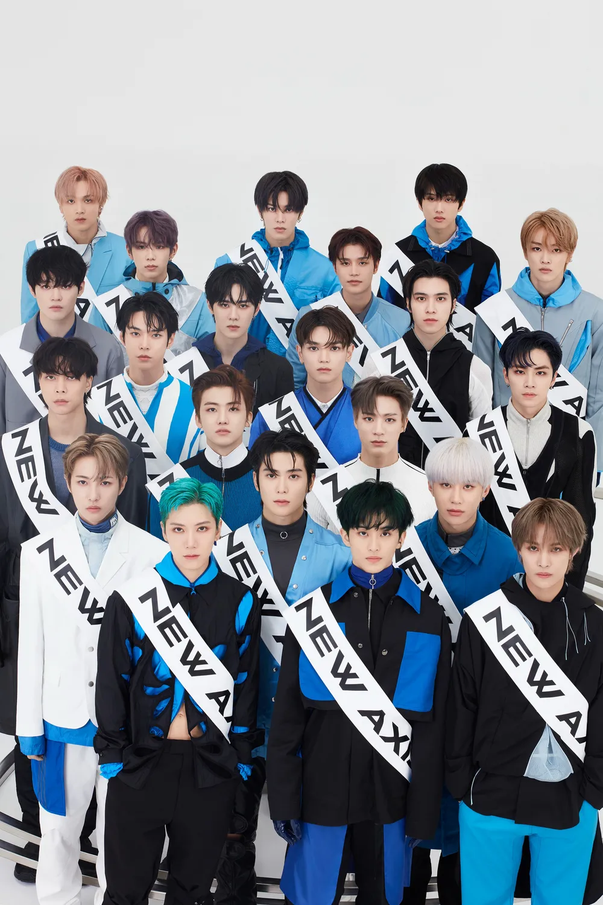

NCT는 SM엔터테인먼트 소속의 20인조 다국적 보이그룹이다. 실제로 전원이 한 곡에 참여하는 경우는 거의 없으며 개별 서브 그룹과 NCT U를 중심으로 활동이 이루어진다.
1) 무한개방, 무한확장
NCT는 멤버 수의 제한 없이 새로운 멤버가 자유롭게 영입되고(무한개방) 계속해서 전 세계로 확장하여(무한확장) 세계 각 도시마다 각 지역을 기반으로 활동하는 팀들이 탄생하게 된다.
NCT 127이 대한민국을 기반으로 활동하는 첫 번째 지역기반팀이며, 2019년 중화권을 기반으로 활동하는 WayV가 데뷔했다. 그리고 2023년, 일본을 기반으로 활동하는 가칭 NCT-Tokyo의 데뷔를 마지막으로 무한확장을 종료하겠다고 밝혔다.
2) Unit 시스템
NCT 내에는 상기된 것처럼 고정된 멤버로 활동하는 지역기반팀과 멤버 구성이 가변적이고 자유로운 연합팀이 있다. 데뷔 당시 연합팀으로 데뷔하였던 NCT DREAM이 사실상 고정팀이 되면서 NCT U가 NCT의 유일한 연합팀이 되었다.
NCT U에서 U는 "United"의 약자로, 각 곡마다 그 곡에 어울리는 멤버들을 조합하여 활동하기 때문에 매번 멤버들의 조합이 달라지는 것이 가장 큰 특징이다. 유동적인 멤버 구성과 활동 방식을 통해 NCT의 무한한 가능성과 다양성을
보여주는 NCT 시스템의 핵심 개념 중 하나이며 매번 멤버 구성과 음악적 컨셉이 다르기 때문에 다양한 장르와 스타일을 보여준다.
그리고 2023년 상반기 NCT 도재정이 멤버가 고정된 첫 유닛으로 정식 데뷔한다는 기사가 발표됐다.